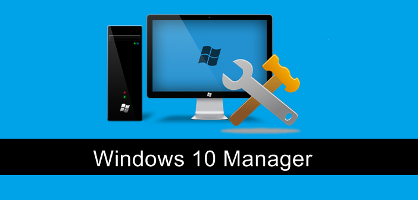
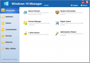
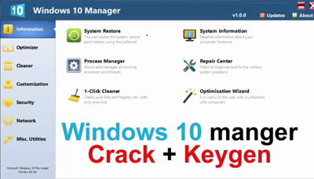

Windows 10 Manager 3.2.8 Final + Serial es una herramienta todo en uno que le ayuda a optimizar, ajustar, reparar y limpiar Microsoft Windows 10. Con el cual aumentaras la velocidad de tu sistema, eliminará fallos del mismo y mejorará la seguridad del sistema Windows 10 Manager Crack cumplirá con todas sus expectativas.
Windows 10 Manager agrupa más de 30 utilidades diferentes en una para ayudar a que su sistema sea más rápido y más estable, para optimizar, modificar, limpiar, reparar y personalizar su copia de Yamicsoft windows 10 manager full.
Este software mostrará la información detallada sobre todo hardware en su sistema. Windows 10 Manager tiene un desinstalador que puede eliminar completamente programas de su sistema sin archivos residuales. También podrá encontrar y limpiar archivos basura, entradas de registro y desfragmentar el registro. Windows 10 Manager 3.3.1 + licencia su sistema de limpieza de 1 clic limpia su sistema automáticamente.
Características Yamicsoft Windows 10 Manager
Crea el punto de restauración del sistema manualmente; Obtiene información detallada sobre su sistema y hardware, le ayuda a encontrar la clave de producto de Micrsoft como Microsoft Windows y Microsoft Office; Muestra y administra todos los procesos y subprocesos en ejecución; Repair Center ayuda a diagnosticar y solucionar los diversos problemas del sistema; Limpia su sistema apenas un tecleo; El Asistente para la optimización es útil para el usuario que no está familiarizado con los equipos.
Ajusta el sistema para mejorar el rendimiento y aumentar la velocidad; Administra y configura el menú de arranque de Windows según tus preferencias; Startup Manager controla todos los programas iniciados con Windows start, comprueba y repara los elementos starup avanzados para restaurar el cambio malicioso por virus; Administra y optimiza los servicios del sistema y los controladores para mejorar el rendimiento; Gestiona y optimiza las tareas programadas para acelerar el sistema.
Disk Analyzer puede analizar y ver el uso del espacio en disco de todos los programas, archivos y carpetas que descubren qué ocupa el espacio en disco y se muestra con un gráfico; Limpia la carpeta WinSxS de forma segura para reducir el tamaño del almacén de componentes; Smart Uninstaller puede borrar completamente los programas de su sistema sin archivos residuales y entradas del Registro; Le ayuda a desinstalar correctamente las aplicaciones de Windows desde su computadora; Desktop Cleaner puede analizar y mover atajos, archivos y carpetas no utilizados en el escritorio a carpetas especificadas; Busca y elimina archivos basura para ahorrar espacio en disco y mejorar el rendimiento.
Personaliza los parámetros del sistema de acuerdo con sus preferencias al ajustar el Explorador de archivos, el escritorio, el inicio, la barra de tareas y el área de notificación; Añade archivos, carpetas y elementos del sistema a Esta PC y Escritorio; Enlaza los archivos o carpetas a tu Escritorio, Barra de tareas o Inicio; Crea los elementos de inicio rápido para jumplist en la barra de tareas; Gestiona el menú contextual cuando hace clic derecho en el archivo, carpeta, etc.
Sistema Tweaks, componentes, UAC, configuración de inicio de sesión, ajusta diversos ajustes y restringe el acceso a unidades y programas para mejorar la seguridad del sistema; Proteja sus archivos sensibles y la seguridad de las carpetas, cifre los archivos, mueva las carpetas del sistema a ubicaciones seguras; Privacy Protector asegura privacidad y mantiene la información confidencial segura al eliminar pistas; File Undelete recupera y restaura archivos borrados o formateados en discos lógicos; Bloquea algunas funciones del sistema para mejorar la seguridad.
Optimiza y ajusta su conexión a Internet y configuración de red; Ajusta la configuración del navegador Microsoft Edge; IP Switcher puede cambiar fácilmente entre diferentes configuraciones de red; Edita el archivo Hosts para acelerar el sistema de navegación por Internet; Wi-Fi Manager puede ver y administrar toda su red inalámbrica.
Crea tareas programadas o los monitores que activan tareas; Muestra y ejecuta la útil colección de utilidades que incorpora tu Windows; Divide un archivo en varios archivos más pequeños o se fusiona con el archivo original; Super Copy es la poderosa herramienta para copiar archivos o copias de seguridad automáticamente; Opera su registro fácilmente usando las herramientas del registro.
Capturas:


Enlaces
-
Windows 10 Manager 3.2.8 Final 32 – 64 bits
"Idioma: Español (Multilenguaje) | Peso: 25 MB | Sistema operativo: Windows | Activador: Crack | Instrucciones: Incluidas | Creador: Yamicsoft "
Video de como Instalar
Próximamente